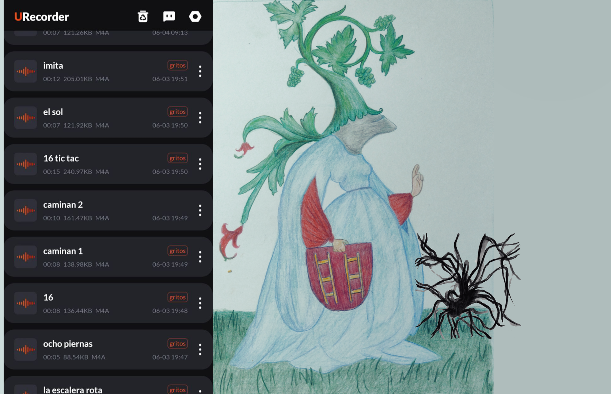
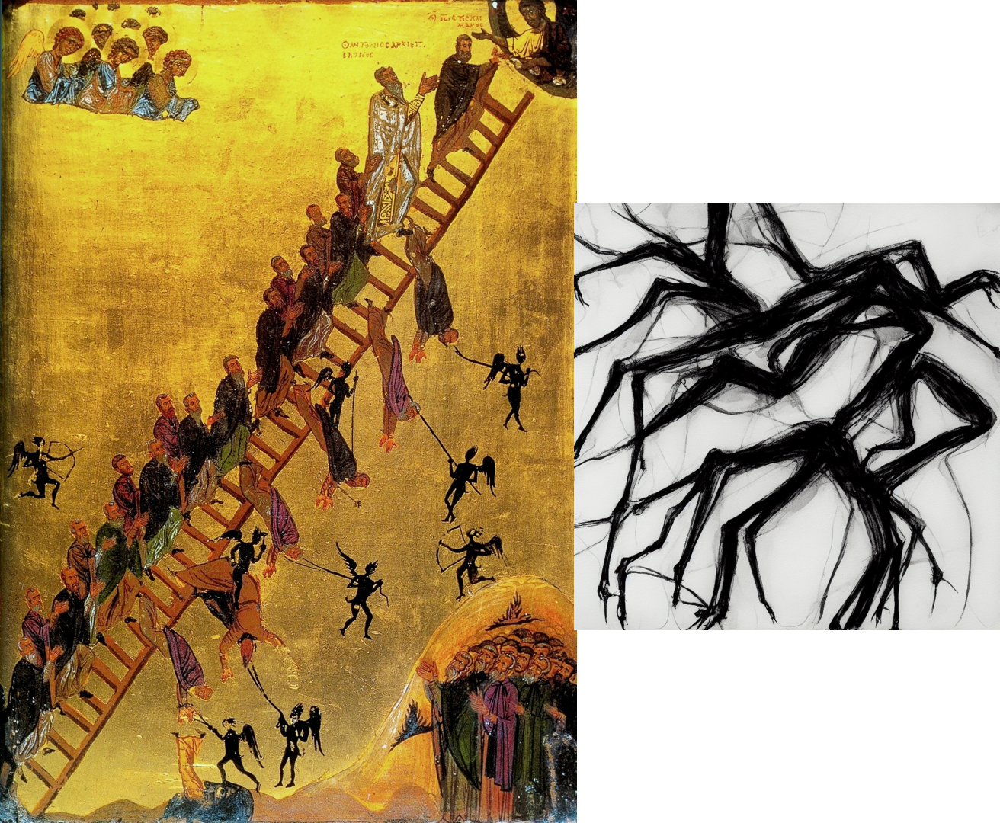
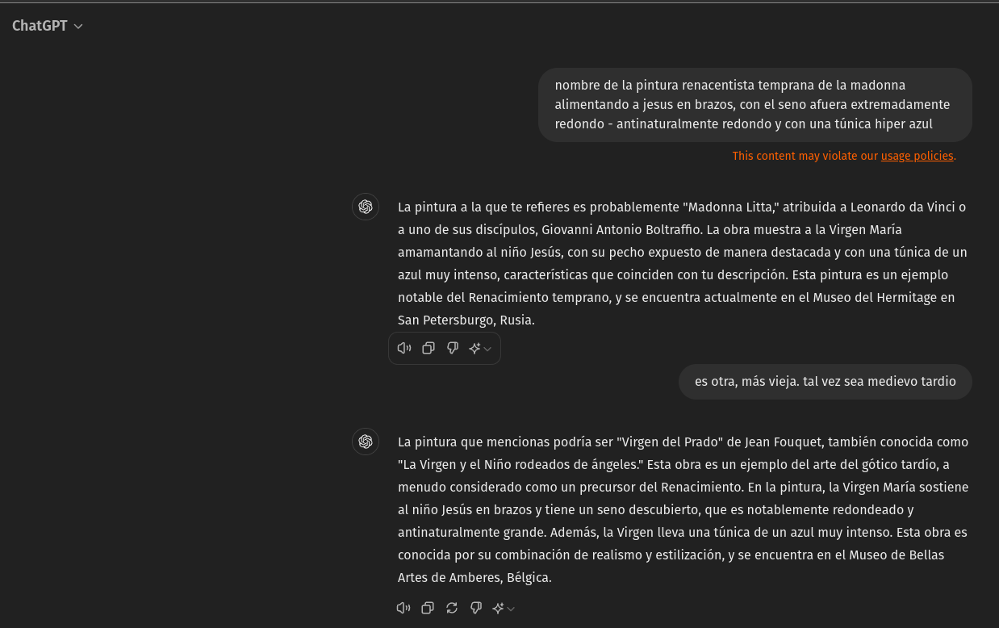
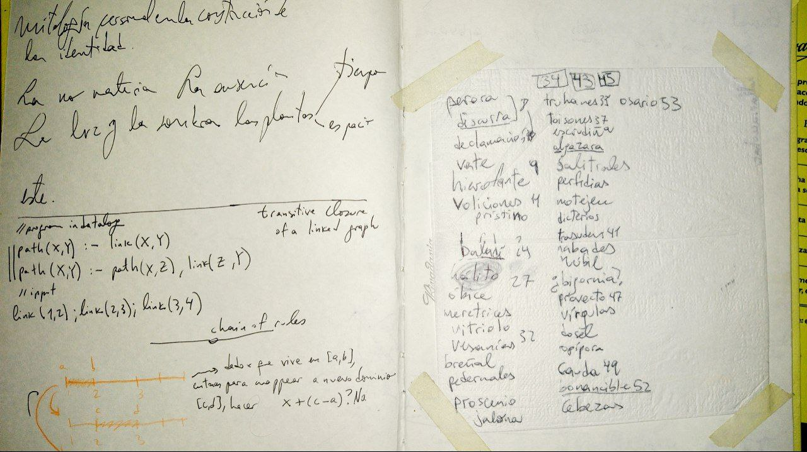

Vengo haciendo un nuevo proceso sinestésico.
Este proceso empezó haciendo dibujos-estudios de ilustraciones, grabados y estampas iluminadas de distintas épocas medievales.
Empiezo dibujando, y luego escribo poemas cortos meditando sobre estos dibujos y los personajes que aparecen. Escribo al mismo tiempo que los grito.
Esto lo hago así porque mi intención es introducir los poemas gritados en pequeñas piezas sonoras que entran en los géneros dungeon synth, medieval synth, black metal y black ambient.
Hasta ahora hice tres temas, quiero dejar acá explicitado la metodología para una de ellas: La escalera rota.
La escalera rota
Para armar la escalera rota interactuaron en un ciclo varios acontecimientos. Uno de ellos fue uno de los primeros dibujos medievales que hice - el de una figura femenina que está armada y que porta un escudo con dos escaleras cortas. En su cabeza florece vegetación y frutos abundantemente.

Me encanta este tipo de imágenes medievales que muestran a mujeres usando armadura. En este caso esta ilustración era una alegoría a la humildad (supuestamente) - me imagino que la alegoría va por el lado de esconder su belleza. Estas ideologías no tienen que ver con mi realidad, así que mi interés pasa por otros ecos que los símbolos despiertan en mí. El eco que más siento ahora al momento de escribir es el de estar más allá de la supervivencia - tener cómo responder y estar bien. Amén.
Para armar un diálogo con lo sonoro coloqué el dibujo en la pared frente mío, a la altura en la que están mis ojos cuando estoy sentada. De esa forma, acercándome a la pared la mujer armada ocupa todo mi campo visual. Bien cerca de la pared, con el celular en la mano empecé a calentar la garganta para poder gritar improvisando palabras.
En ese momento sale una araña de atrás del dibujo pegado a la pared y camina por arriba del dibujo. La luz cenital de mi escritorio hacía que de sus piernas largas brote una sombra increíble.

Empecé a grabarme gritando - imaginando la araña como parte de la situación representada. Y así empecé a gritar sin mucha técnica ni preocupación por mi garganta.
ocho piernas caminan por la escalera rota
dieciseis contando la sombra
peldaños cayendo al piso
me sorprende la nitidez
mi mente/el sol
ascienden
16 tic tac tic tac
asustado el sol se esconde
imita imitan 16.
Con esto grabado empecé a buscar como punto de partida transcripciones en MIDI de música medieval y renacentista, para modificarlas y asignarle diferentes sintetizadores en Bitwig.
El objetivo de esto era ver qué pasaba si introducía gritos inspirados en el shriek de black metal en algo que suene como dungeon/medieval synth.
Fui componiendo por capas agregando efectos con énfasis en la desafinación y buscando construir la atmósfera que sentía le correspondía al imaginario distópico-medieval que me viene ocupando la mente.
Aquí, la maqueta de La Escalera Rota (recomiendo usar auriculares o parlantes):
Espero encontrar/crear un espacio que me permita avanzarla, junto al resto de los procesos que vengo realizando.
Realidad medieval
Se siente en todos lados un cambio, y fue de un día para el otro. Sospechoso - es como si lo hubieran estado esperando relamiéndose. Hay ahora mismo una comodidad absoluta en la violencia explícita. En particular la violencia explícita hacia las mujeres se volvió política oficial de estado. Esto actuó como un río con mil vertientes - más allá de la "coyuntura" lo estoy atravesando más personalmente, en mi laburo como programadora y además en el campo del arte y la cultura. Es como un duelo y el planteo eterno que nos hacemos ("y ahora?"). Es además un terror existencial.
En Córdoba es muy dificil encontrar mujeres en los escenarios, qué decir de la escena de vjs mujeres que se venía armando de lo lindo en la noche cordobesa. Tal vez hay algo de este ser cordobés que me lleva a indagar lo medieval-católico-jesuita, andá a saber.
Pero lo hablo con las mujeres que conozco - siento que estamos en una época neo-medieval. Los discursos en puja hegemónicos coquetean con la guerra fría, pero reniegan del modernismo. En contra de la industria, de la cultura y la ciencia - qué queda? Una esperanza vacía - en qué? En el absoluto abstracto 1 : la realidad chata de lo que (supuestamente) es. Que exista es prueba de que es "bueno", mano invisible del mercado mediante. Obvio, a menos que sea algo exitoso que se destruye o prohíbe a propósito, pero esos casos no cuentan son "malos".
Son tiempos neo-medievales, ni católicos ni judíos ni telemitas ni hitlerianos esotéricos sino todo junto. Se vive un amor por la magia aplanada sin historia, la manifestación del pensamiento positivo entrepeneur que solo sirve para sacarle brillo al fálico "1" - el eterno presente de una supuesta tradición eterna de las cosas que no cambian porque no pueden cambiar porque son buenas porque no deberían cambiar, y que necesita el apoyo de todos para existir (o sos un degenerado).
Y el arte? Qué arte?
Sálvese quien pueda.
93 Do what thou wilt o Amén o Shalom, que sé yo.
Regresar
Este proceso me sirve como un punto de parada bastante necesaria - pensando qué lugar ocupa la producción/investigación de arte en mi vida, y qué lugares puede tener en una realidad tan cambiada.
Cuando veo/escucho lo que vengo haciendo me hace acordar a la pintura que me convenció de pasarme de estudiar Física a estudiar Artes visuales - crisis mediante.

La sensación que siempre me dio la Virgen de Fouquet (y que me sigue dando) es estar observando algo alienígena - ahora lo describiría como una sensación algebraica. Ideas de belleza, luchas de poder entretejidas en la imagen, de un lugar foráneo y ajeno. Inaccesible.
Cuando veo la Virgen de Fouquet y siento lo mismo me quedo más tranquila.
Mucho más atrás - de niña y adolescente - me gustaba mucho copiar y estudiar los grabados de un diccionario gigante que tenían mis papás. Anotaba mis palabras favoritas y practicaba dibujo.

Cuando me pongo a copiar ilustraciones del diccionario y siento lo mismo me quedo más tranquila.
 La sensación que siempre me dio la Virgen de Fouquet (y que me sigue dando) es estar observando algo alienígena - ahora lo describiría como una sensación algebraica. Ideas de belleza, luchas de poder entretejidas en la imagen, de un lugar foráneo y ajeno. Inaccesible.
La sensación que siempre me dio la Virgen de Fouquet (y que me sigue dando) es estar observando algo alienígena - ahora lo describiría como una sensación algebraica. Ideas de belleza, luchas de poder entretejidas en la imagen, de un lugar foráneo y ajeno. Inaccesible.